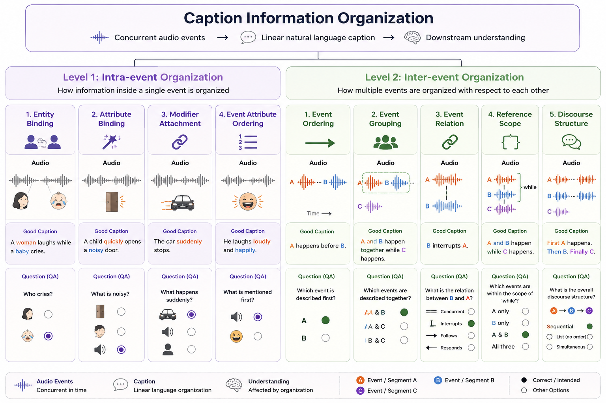

Temporal Audio Understanding
Temporal Audio Caption
面向语音大模型的时序化 audio caption 展示页：从 speech rule-based 奖励起步，逐步扩展到 benchmark 体系与全音频模态。
Motivation
提升语音大模型的时序 Caption 能力。目前痛点：
- 顺序
- 并行事件混淆（鸡尾酒会）
TODO
- 建立 benchmark 评测体系（Caption Benchmark、QA Benchmark）
- 全音频模态（sound、music、speech）方案落地
Speech Modality
🐳 ORCA: Dialogue Speech with Who / What / When Rule-based Reward
当前 Plan、Benchmark、Baseline、GRPO、SFT 与 SFT+GRPO 都归入 speech dialogue temporal caption 的 rule-based 奖励路线。
Audio-Domain Solution
🥑 Avocado：Audio-Domain Natural Caption GRPO
与 ORCA 和 Benchmark 体系并列的第二条方案：面向 speech、sound、music 的自然语言 caption 训练与 GRPO 路线。
当前最佳 Caption Prompt：general_audio_caption_v2_expansive
来自 Avocado prompt ablation：相同 180 条 smoke 样本上，coverage、answered accuracy、all-sample accuracy、wrong-answer 与 length finish 综合最好。
English prompt
Listen carefully to the provided audio and write an evidence-rich natural-language caption for downstream audio question answering. Your priority is to preserve all audible clues that could help answer questions. Be more complete than a generic caption, but stay faithful to what can be heard. Include audible evidence when present: - Speech: number of speakers when discernible, speaking order, language, quoted or closely paraphrased key words, names, numbers, repeated phrases, interaction pattern, emotional/prosodic changes, laughter, hesitation, overlap, and relative loudness or distance changes. - Music: vocals versus instruments, identifiable instruments, rhythm, tempo, style-like qualities, mood, chord or melody movement only when clearly audible, and changes over time. - Sound events: source-like descriptions, event order, repeated counts or rhythm, intensity, foreground/background placement, overlap with speech or music, and changes in loudness, distance, or texture. - Acoustic scene: room/reverb/noise/crowd/traffic/outdoor cues, device or recording artifacts, and other background evidence. When the audio suggests a cue but does not prove it, use calibrated wording such as "sounds like", "appears to", "possibly", "a higher/lower-pitched voice", "nearer/farther-sounding", or "not clearly audible". Do not make unsupported claims about identity, profession, exact age, gender, nationality, culture, price, visual action, location, or exact music theory function. If a likely question would require visual-only or non-audible evidence, make the audible evidence gap clear in natural language instead of guessing. Write one information-dense paragraph of about 120-180 words when the clip has enough content; use fewer words for simple clips. Avoid repeating the same lyric, laugh, sound, or phrase unless the repetition itself is important. Do not output JSON, bullet lists, timestamps, or <answer> tags.
中文翻译
请仔细聆听给定音频，并写出一段证据充分的自然语言 caption，用于下游音频问答。 你的首要任务是保留所有可能帮助回答问题的可听线索。请比普通概括式 caption 更完整，但必须忠实于实际能听到的内容。 如果音频中存在，请包含以下可听证据： - 语音：可辨别时写出说话人数、说话顺序、语言、关键字词的直接引用或近似转述、人名、数字、重复短语、互动模式、情绪或韵律变化、笑声、迟疑、重叠说话，以及相对响度或距离变化。 - 音乐：人声与器乐的区分、可识别乐器、节奏、速度、风格化特征、情绪、只有在清楚可听时才描述和弦或旋律走向，以及随时间发生的变化。 - 声音事件：类似声源的描述、事件顺序、重复次数或节奏、强度、前景/背景位置、是否与语音或音乐重叠，以及响度、距离或质感变化。 - 声学场景：房间感、混响、噪声、人群、交通、户外线索、设备或录音瑕疵，以及其他背景证据。 当音频暗示某个线索但不能证明时，请使用校准性措辞，例如“听起来像”“似乎”“可能”“较高/较低音高的声音”“听起来更近/更远”或“听不清”。不要对身份、职业、精确年龄、性别、国籍、文化、价格、视觉动作、地点或精确乐理功能做无证据断言。如果某个可能的问题需要视觉信息或音频中不可听的信息，请用自然语言明确说明可听证据缺口，而不是猜测。 当片段内容足够丰富时，写一段约 120-180 个英文词的信息密集段落；简单片段可更短。除非重复本身很重要，否则避免重复同一句歌词、笑声、声音或短语。不要输出 JSON、项目符号、时间戳或 <answer> 标签。
Linearization & Implicit Priority
🌰 ACORN: Audio Caption Ordering with Reinforcement Learning
自然语言必须将原本并行发生的事件和属性线性化；一旦完成 linearization，就会引入 implicit priority，从而影响读者或模型对事件的理解。

Evaluation System
Benchmark体系
同时建设直接 caption 指标和下游 QA 指标：一个看描述本身是否完整真实，一个看描述能否支持推理问答。
直接指标：Caption Benchmark
推荐指标：
TACOS-200 dedup subset：caption 直接指标评测与数据说明。
AVQA train split 冻结的 100 条 held-out 样本：teacher caption → atomic evidence → reward reference 的事件拆解 benchmark。